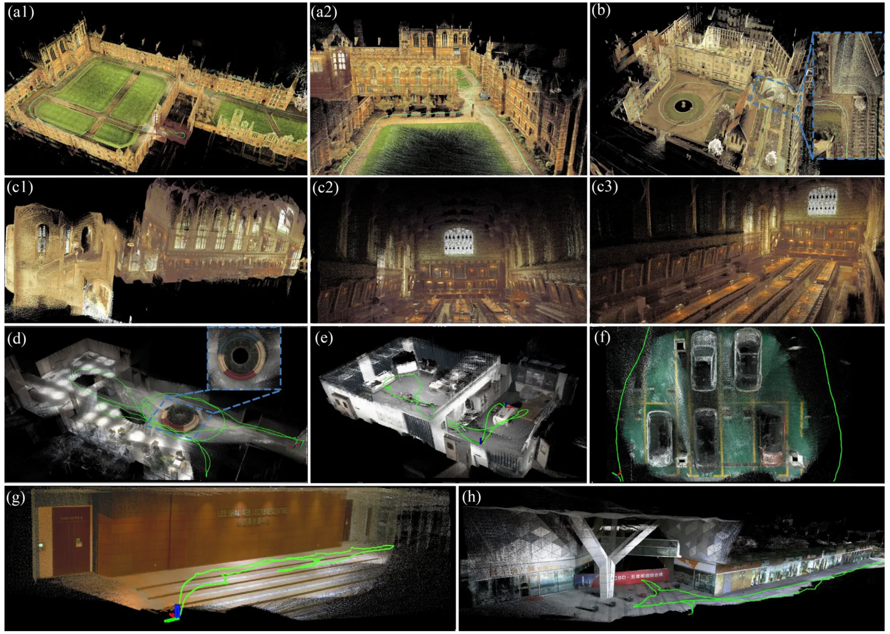
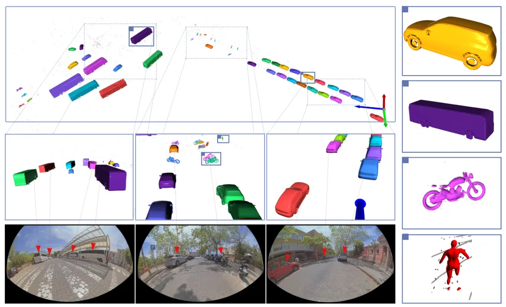
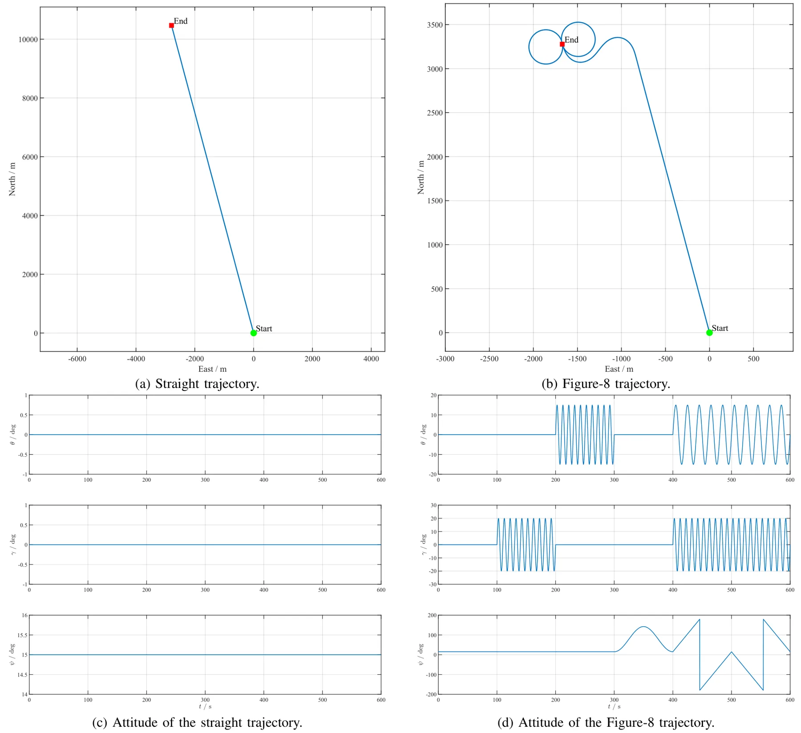
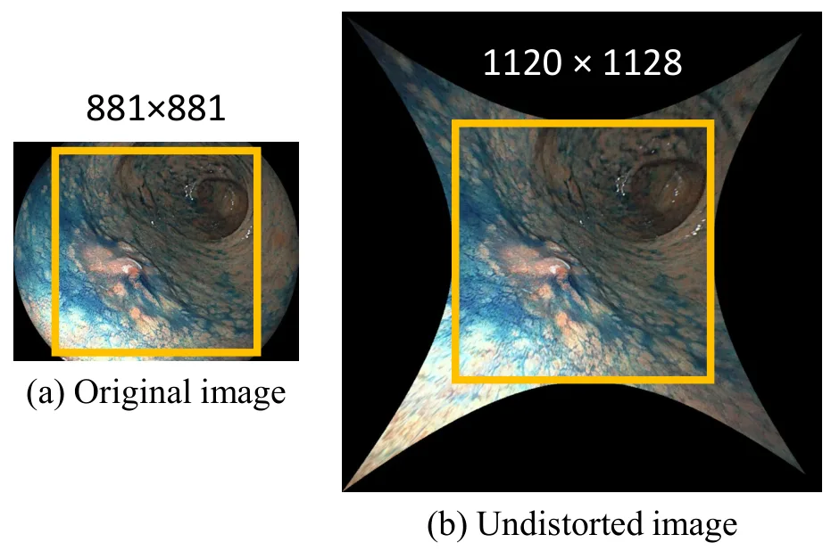
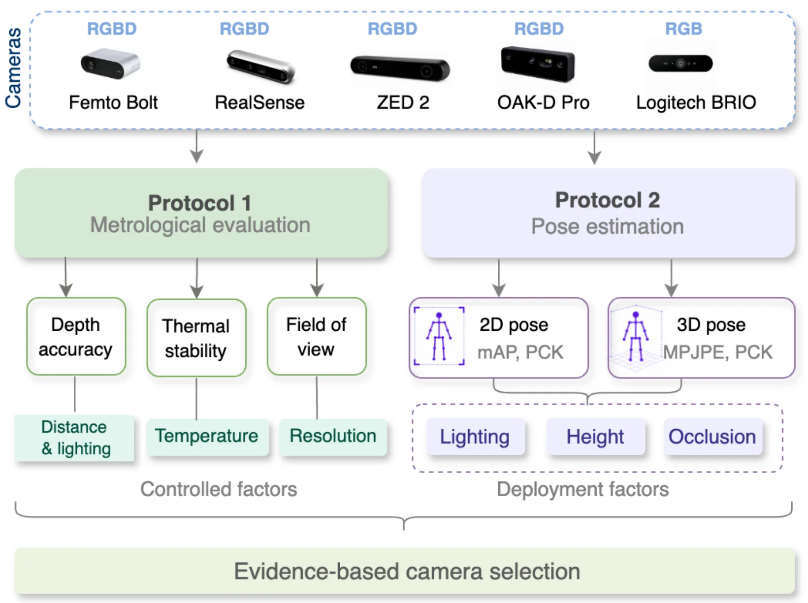

新论文 · 日期 2026-06-24 · score 15 · cs.RO
作者：Yinong Cao, Xin He, Yuwei Chen, Shijie Liu
评分 9.2/10
LIVOLiDAR 退化子空间融合InEKF
一句话工作总结：按信息矩阵特征方向选择性融合视觉约束，让视觉主要补偿 LiDAR 退化方向，在 InEKF LIVO 中提升鲁棒性并降低计算/内存开销。
紧耦合 LiDAR-视觉-惯性里程计虽然能结合 LiDAR 的几何深度与视觉观测，但两类外感传感器有不同失效模式：LiDAR 在几何欠约束方向退化，视觉在光照差或缺纹理时退化。SA-LIVO 提出 Subspace-Aware Information Fusion，对联合 LiDAR-visual 信息矩阵做特征分解，并在每个特征方向用线性夹紧软门控抑制退化方向、保留可观测方向。LiDAR 与视觉残差随后在共享线性…
Tightly coupled LiDAR-visual-inertial odometry (LIVO) fuses precise geometric depth with complementary visual measurements, yet its exteroceptive sensors face independent failure modes: LiDAR degenerates when…
新论文 · 日期 2026-06-25 · score 13 · cs.RO, cs.CV
作者：Alexander Schperberg, Shivam K. Panda, Abraham P. Vinod, M. K. Jawed
评分 8.6/10
Active SLAM3D 语义地图VLM语义导航
一句话工作总结：把主动探索、3D 语义地图和 VLM 任务推理通过 contextual bandit 连接起来，实现从几何探索到语义导航的自适应切换。
RoboAtlas 是一个上下文主动 SLAM 框架，核心是用可扩展的 3D 语义地图系统 OpenRoboVox 为探索和任务导航提供 grounding。系统结合 frontier exploration、全局语义地图推理和 egocentric VLM 推理，并通过 contextual multi-armed bandit 随场景理解程度从几何探索逐步转向语义引导导航。作者在仿真和 Unitree Go2…
We present RoboAtlas, a contextual Active SLAM framework that adaptively balances geometric exploration and semantic reasoning using a scalable 3D semantic mapping system, OpenRoboVox. RoboAtlas integrates fro…

新论文 · 日期 2026-06-24 · score 12 · cs.RO, cs.CV
作者：Ahmad Kourani, Ghina Daoud, Daniel Asmar, Imad Elhajj
评分 8.4/10
对象级 SLAM多类别建图鱼眼-LiDAR异步 mapping
一句话工作总结：在 DSP-SLAM 上加入异步对象建图和鱼眼-LiDAR 融合适配，使多类别高保真对象 SLAM 更接近实时部署。
对象感知 SLAM 常在实时性、多类别支持和高保真语义对象模型之间取舍。DSP-SLAM++ 在 DSP-SLAM 基础上扩展出异步 mapping pipeline，以降低对象处理线程瓶颈，并针对单目鱼眼-LiDAR 传感器组合加入传感器融合适配。实验显示，系统能为多个对象类别生成细粒度、几何完整且语义一致的形状模型，同时相对 SOTA 基线将最大对象处理延迟降低最高 70%，支持具有挑战性的 25 Hz 多类别…
Existing object-aware SLAM systems force a trade-off between real-time performance, multi-class support, and the generation of high-fidelity, semantically coherent object models. To address this trade-off, we…

新论文 · 日期 2026-06-24 · score 11 · cs.RO
作者：Qiyang Lyu, Zhenyu Wu, Wei Wang, Hongming Shen
评分 8.1/10
磁场定位LiDAR-IMU 融合GNSS-deniedAMR
一句话工作总结：将环境磁场地图、IMU 和 LiDAR 融合，用磁场信息补偿 GNSS-denied 室内场景中的几何退化和纹理不足定位问题。
办公室、酒店、地下停车场等 GNSS-denied、几何重复或弱纹理环境仍是 AMR 可靠定位难题。MIL-LC 提出磁力计-惯性-LiDAR 多模态定位框架和定制传感器套件，利用 ambient magnetic field 不依赖几何/纹理、也无需额外 beacon 基础设施的互补特性，在 LiDAR 几何退化或长期部署中磁场地图发生变化时仍提供稳健定位。相比过去主要基于智能手机的行人磁场融合研究，本文面向 A…
Localization in challenging environments, such as GNSS-denied, geometrically repetitive, or textureless scenes commonly found in offices, hotels, and underground parking facilities, remains an open problem for…

新论文 · 日期 2026-06-24 · score 9 · cs.CV
作者：Zhijie Zheng, Xinhao Xiang, Jiawei Zhang
评分 7/10
单图三维重建前馈重建几何 warp残差建模
一句话工作总结：用几何前向 warp 作为无参数先验，再学习少量残差校正，实现无需扩散采样的前馈单图三维重建。
PRISM 面向单图三维场景重建，试图摆脱相机控制视频扩散模型在推理时需要迭代采样的高成本。作者观察到，几何 forward warping 本身已能从输入图像直接覆盖目标视图的大部分区域，模型主要需要学习紧凑的残差校正。因此，PRISM 将多视角 latent 预测拆成无需参数的几何先验和学习型 residual correction，推理时不需要 diffusion sampling。为提升纯合成训练到真实数据…
Reconstructing 3D scenes from a single image is a fundamental challenge in computer vision, with broad applications in virtual reality, robotics, and content creation. Recent methods achieve outstanding perfor…

新论文 · 日期 2026-06-24 · score 6 · eess.SP
作者：Xuyang Jiang
评分 7.2/10
GNSS/INSSINS 粗对准误差传播组合导航
一句话工作总结：为 GNSS 辅助滑窗速度积分粗对准建立姿态误差解析传播模型，预测陀螺/加计/GNSS 速度/杆臂不确定性导致的姿态偏置与协方差。
优化式对准（OBA）常把 SINS 粗对准转化为常初始姿态估计问题，是 GNSS 辅助运动中对准的重要技术。现有研究多关注姿态确定算法或鲁棒观测向量构造，但缺少从原始传感器和辅助速度不确定性到最终姿态误差的解析映射。本文针对固定长度滑窗速度积分 OBA 提出一阶姿态误差传播模型：先建立滑窗观测模型及离散实现，将陀螺误差、加计误差、GNSS 速度噪声和杆臂效应传播到未归一化观测向量；再用 Davenport q me…
The optimization-based alignment (OBA) approach transforms the strapdown inertial navigation system (SINS) coarse alignment into a constant initial attitude estimation problem, serving as a prevalent technique…

新论文 · 日期 2026-06-24 · score 6 · cs.CV
作者：Masaki Minai, Yusuke Monno, Masatoshi Okutomi, Sho Suzuki
评分 6/10
新视角合成3DGS 评测内窥镜重建真实数据集
一句话工作总结：发布包含胃镜图像、相机位姿和点云的真实 NVS 数据集，并评测多种 3DGS 方法在内窥镜场景中的表现。
NeRF 和 3D Gaussian Splatting 推动了 novel view synthesis，但胃镜场景缺少真实数据集来评估 NVS 方法。本文提出 GastroNVS，包含真实胃镜检查中的图像、相机位姿和点云，并用多个 3DGS 方法进行评测，讨论胃镜 NVS 的未来挑战。潜在应用包括扩展内窥镜视野、构建 3D archive 数字孪生和内镜医师训练。数据集需从项目页申请获取。
Novel view synthesis (NVS) is an active research topic in computer vision, owing to the success of neural radiance field (NeRF) and 3D Gaussian splatting (3DGS) methods. While NVS opens the door to potential a…

新论文 · 日期 2026-06-24 · score 4 · cs.CV
作者：Amirhossein Dadashzadeh, Jingjing Liu, Qianhui Men, Qiushuo Cheng
评分 5.2/10
RGB-D 相机评测室内感知深度误差3D reconstruction
一句话工作总结：系统验证多款 RGB/RGB-D 相机在室内医疗监测场景中的深度、2D pose 和 3D reconstruction 表现，给出设备选择依据。
相机监测系统越来越多用于医疗和家庭环境中的人体活动连续评估，但真实室内条件下设备计量性能与算法表现缺少系统验证。本文提出两个技术验证协议：一是评估 RGB/RGB-D 相机计量性能，二是评估其对人体姿态估计的支持。实验覆盖 5 款相机、照明变化、相机高度、视角和遮挡等因素，并结合 SOTA pose estimators。结果显示不同设备深度偏置差异很大：5 m 处从约 50 mm 到超过 1400 mm；2D p…
Camera-based monitoring systems are increasingly adopted in healthcare settings for the continuous assessment of patient movement and activities. However, their technical performance under real-world indoor co…